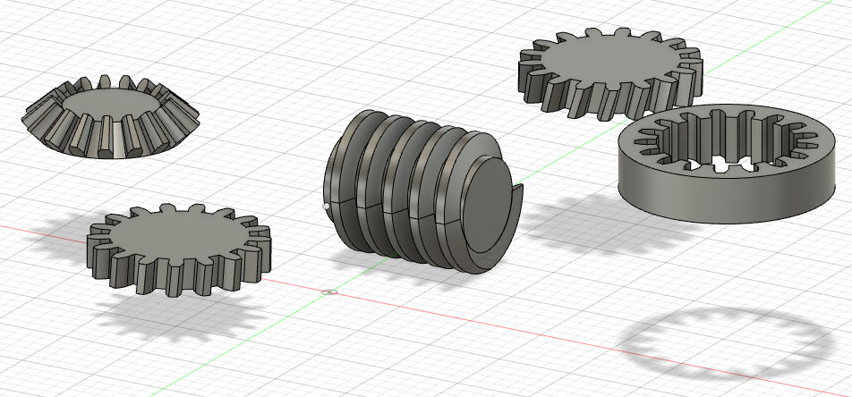
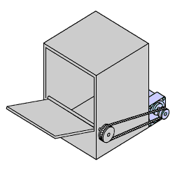
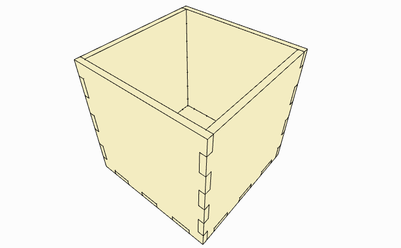
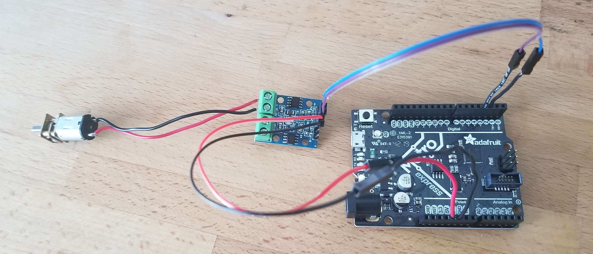
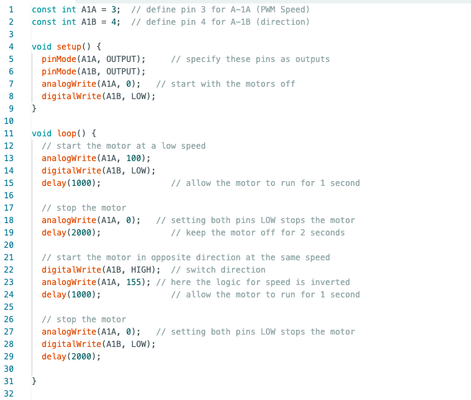

# modeling gears
# ---------------------------------
i spent some time this week trying to model gears in fusion 360 from scratch which was fun. at some point, i figured there had to be an easier way to model gears. i found a fusion 360 plug-in called gf gear generator, which allowed me to create gears in a fraction of the time required to model them manually. i learnt about the different types of gears: spur gears, simple/double helical gears, 90 degree bevel gears, internal gears, and gear racks. i also found myself feeling far more comfortable using fusion 360 this week.

# kinetic sculpture
# ---------------------------------
the primary assignment of the week was to build a kinetic sculpture. at first, i was considering creating something decorative and artistic but i figured that this was the ideal time to start working on the fundamental building blocks for my final project. my plan for my final project was still to make a device that could fold clothes by itself. a crucial part of such a device is a flat panel that can move around a fixed axle to flatten clothing under it. i thought that for this week's assignment, i would make it my goal to create a mechanism that rotated a flat panel by a pre-defined number of degrees and then rotated it back to its original position. i did some digging online and found a piece of inspiration around which i would model my assignment.

this kind of box also seemed useful to have just because of its applications in self-opening cupboards and windows and such. i thought i would start off by first just making the box that would have the opening and closing panel. i used makercase to produce the .dxf for a simple cubical finger joint box with a side of 140 mm.

i laser cut the box using wood panels of 6 mm thickness and assembled it.

next i needed to figure out a way to create an axle around which the opening and closing panel / door could rotate. i found a small aluminium dowel and used the aluminium cutting saw to cut it to an appropriate length. i used a digital caliper to measure the diameter of the dowel and found a drill bit of the same diameter. next i used the caliper to mark where i would make the holes for the dowel on the box and then used the drill press to drill holes into the box.

it was now time to make the door of the box. i measured the box and left out some more extra space for free movement and then laser cut a clear acrylic panel into a simple square. the box had a side of 140 mm and the wood itself had a thickness of 6 mm on both sides. so 140 - 6 - 6 = 128 which i then reduced to 125 mm for good luck. so now i had my clear acrylic "door". i had to figure out a way to attach the door to the axle and i had firmly decided to not use hot glue because of how unelegant i thought it would look. so i thought i could attach it using a wire and holes. i drilled 6 tiny holes into the acrylic panel and then wrapped the axle using wire in such a way that it would remain attached to the panel. but it was all in vain. i simply wasn't able to achieve a tight enough fit and there simply wasn't enough friction between the wire and the aluminium axle for it to stay in place. so after a couple hours, i gave up and just used glue...

finally the door moved when the axle was turned. i tried opening and closing the door manually and the results were very promising.
just two days before this assignment was due, our in class lab activity had been to program motors to turn in both clockwise and anti-clockwise directions at defined speeds for defined amounts of time. so i thought this was the perfect opportunity to make use of my newly acquired arduino programming skills. i pulled out my arduino uno, my breadboard, my l9110 h-bridge motor driver, my 5 volt dc motor, my connector wires and fired up the arduino ide on my laptop. i basically followed the same steps as we took during the week 4 class (from the ps70 website). and so my circuitry looked the same as it did during the in class activity.

before i could try out the motor on my box and door set-up, i needed to figure out a way to attach my motor to my aluminium axle. thankfully, the dowel itself was hollow and had a hole running through it. however, the hole was just a bit too big for the motor to fit into it snugly enough to make the axle rotate. as a quick hack, i took some masking tape, measured it and cut it carefully, and then wrapped it around the rotating part of the motor to make it just thick enough to fit snugly into the dowel. i also used a rubber band to secure the motor onto the box. the set-up was now ready for some code. i did some trial and error to figure out the ideal speed and delay that would allow the door to open and close entirely. ultimately, this was the code i used.

here is a video of an example of trial and error while figuring out the speed and delay.
finally, i saw the light at the end of the tunnel and got everything to work. here is the finale!
to be fair, perfecting the speed and delay could use a couple more iterations... part of the assignment this week was to also use a multimeter to measure the voltages in the circuit and use ohm's law to calculate current through the circuit. the multimeter revealed that there was a voltage of 5V in my circuit. the motor that i used had a resistance of 1.5 kilo ohms across it. V = IR and so the current through my circuit was 0.00333... amps.